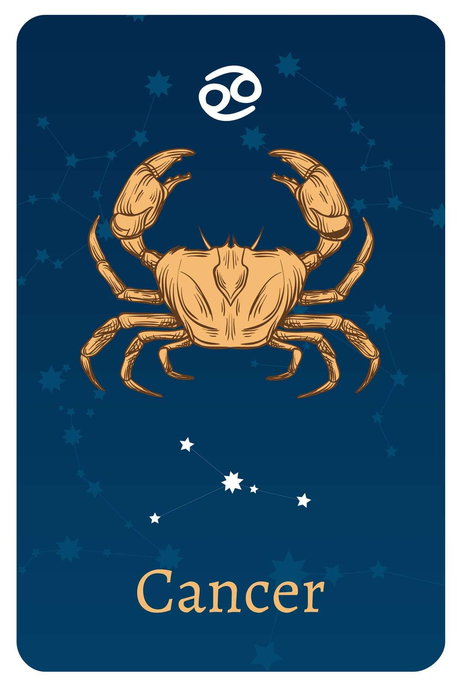

- Date Range : AUG 23 – SEP 22
- Element : Earth
- Color : Brown
- Quality : Mutable
- Day : Wednesday
- Ruling planet : Mercury
- Ruling house : Sixth
- Lucky number : 5, 14, 15, 23, 32
- Lucky gem : Saphire
- Top love Matches : Cancer
Virgo (AUG 23 - SEP 22)
Virgo Personality Traits
Strengths : Loyal, analytical, kind, hardworking, practical
Weaknesses : Shyness, worry, overly critical of self and others, all work and no play
Virgo likes : Animals, healthy food, books, nature, cleanliness
Virgo dislikes : : Rudeness, asking for help, taking center stage
Virgos are known for their meticulous attention to detail and their deep sense of humanity, which makes them one of the most caring signs of the zodiac. Their methodical approach to love and life ensures that nothing is left to chance.
Although they can be tender, they may keep their heart closed to the outer world. This sign is often misunderstood not because they lack the ability to express themselves, but because they don't always trust their feelings and tend to prioritize reason over emotions. The symbolism behind their name reflects their nature as individuals who approach everything as if it were their first time experiencing it.
As an Earth sign, Virgos fit perfectly between Taurus and Capricorn, giving them a strong character that favors conservative, well-organized things and practicality in everyday life. They lead organized lives, and even when things become chaotic, their goals and dreams are still strictly defined in their mind. Their concern for details is so strong that they can become overly critical and concerned about matters that others may not care much about, constantly worried that they might have missed something that cannot be fixed. With Mercury as their ruling planet, Virgos have a well-developed sense of speech and writing, as well as other forms of communication. Many Virgos may choose to pursue careers as writers, journalists, and artists, but their desire to help others makes them natural caregivers who feel a sense of purpose in helping others.
With Mercury as their ruling planet, Virgos have a well-developed sense of speech and writing, as well as other forms of communication. Many Virgos may choose to pursue careers as writers, journalists, and artists, but their desire to help others makes them natural caregivers who feel a sense of purpose in helping others.
Virgo Love Style
Virgo loves hard, and is always in pursuit of star love the kind where souls, minds, and bodies seamlessly merge. That's why this sign sometimes gets the (unfair) reputation of being too picky.
They're not they just know exactly what they're looking for, and know that settling for someone good enough will mean that they'll never find the love that their body and soul crave.
Even when they find someone who might fulfill that role in their lives, Virgos may still be cagey. That's because this sign is innately wired to protect their hearts. During the initial courtship, which may feel like it's taking forever, Virgo is watching his or her potential partner's every move. They want to make sure that this person will live up to the ideal image that they're crafting in their mind, and a wrong move (like being rude to a waiter) will cause Virgo to cross this candidate off the list.
However, once Virgos give their heart, they give everything. They expect absolute honesty and give the same in return. A Virgo truly believes that partnership means "what's mine is yours," and this sign elevates a partnership above all else. Because Virgos believe in lifelong love, a breakup or betrayal can be particularly devastating.
Virgo may seem a bit buttoned-up in public, but they love sex they see it as a celebration of their partnership and a commitment to their partner. They cherish the physical aspects of their relationship and are not happy if they don't have that, even for a few days. Making plenty of physical contact, including morning kisses and long evening embraces, massages, and time in the sheets, is key to keeping your Virgo happy.
Virgo Friendship Style
Don't be offended if Virgo turns down the first invite you extend although Virgos are kind and friendly to everyone, they may have some walls around them, built to protect themselves and the circle of friends they already have. This sign takes friendship very seriously, and is also very good at putting themselves (and their energy reserves) first. That's why Virgos won't take on a friend that they don't think they'd be able to sustain. So while Virgo is happy to confab in the locker room before a gym class, it may be years before he or she finally says yes to that coffee after class invite. Once you have a Virgo friend, you have a friend for life. They can also be your conscience, happy to give an opinion and letting you know if you're not doing your best. Virgos demands excellence from everyone in their lives (especially their friends), and they're quick to point out if they don't think you're living up to your potential. Because Virgo chooses friends carefully, he or she respects the "friend" label and expects you to do the same. A Virgo hates when friends cancel last minute, and this sign is only interested in friends on whom they can rely.
Three reasons why Virgo make great friends
- As perfectionists, Virgos will tell you when you're not living up to your potential and they'll inspire you to make them proud.
- Blessed with a wry sense of humor that only their inner circle gets to see, Virgos will make you laugh more than anyone else in your life.
- They push you. An Aquarius will check to make sure you hit your deadlines, scheduled that review with your boss, or updated your LinkedIn. They're not doing this because they want to control you, but because they know that doing your best is what will make you happy.
Virgos are amazing! Their name says it all:
V for virtuous
I for intelligent
R for responsible
G for generous
O for optimistic
Virgo career, money & success traits
Virgo's greatest career strength:Intelligence. Fiercely intelligent, Virgos are a manager's dream because they can both see the big picture and focus in on the tiny details to make a project work.
Virgo's greatest career challenge: Perfectionism. Virgo wants everything he or she does to be the best, and will sometimes delay projects when "good enough" might have been totally acceptable.

Motto
"My best can always be better."
Famous Virgos

Beyonce
(Singer)
SEP 04
Virgo
SEP 04
Virgo

Pink
(Singer)
SEP 08
Virgo
SEP 08
Virgo

Niall Horan
(Singer)
SEP 13
Virgo
SEP 13
Virgo
Join Our Daily Overview
Your Astrological overview guides you on what to look out for and how to act in tune with the stars and planets each day.
Was this page helpful?
Do not selling My personal info!
© Copyright-2023 -All right reserved.